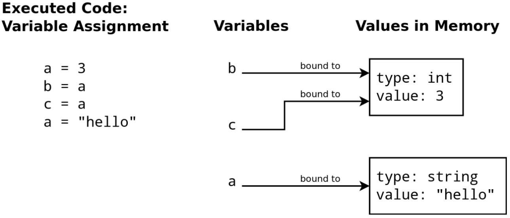

Osnovni elementi Pajton jezika
U ovom poglavlju upoznaćemo se osnovnim elementima Pajton jezika.
Pajton kako kalkulator
Pajton može da deluje kao jednostavan kalkulator. Ako u ćeliju jupyter beležnice upišete izraz i izvršitr taj kod, dobićete vrednost izraza. Na primer:
2+2
4
50-5*6
20
8/5
1.6
Osnovni tipovi podataka u Pajtonu
Osnovni tipovi podataka u Pajtonu su:
Celi broj - celi brojevi poput
23,23412Broj u pokretnom zarezu - brojevi sa decimalnom tačkom poput
2.7182, ili poput2.1e7što je \(2.1\cdot 10^7\) ili2100000.0Bulov tip - koji ima vrednosti
TrueiliFalseString - nizovi tekstualnih karaktera
Ovi tipovi podataka su na neki način kao atomi. U kasnijim poglavljima videćemo kako se pomoću njih grade složenije strukture poput molekula u hemiji. Za svaki tip podataka postoje pravila korišćenja kojim se bavi računar.
Komentari
Komentar u Pajtonu je deo teksta u programu koji računar ignoriše, a programer ga koristi da objasni kod. Tekst posle # Pajton interpreter ne posmatra.
Postoje dve osnovne vrste:
Jednolinijski komentar — počinje znakom
#i traje do kraja linije.
# Ovo je jednolinijski komentar
x = 10 # Komentar iza koda
Višelinijski komentar — koristi trostruke navodnike (tehnički string koji se ne dodeljuje):
"""
Ovo izgleda kao komentar,
i služi za duža objašnjenja.
"""
Komentari pomažu da kod bude jasniji i lakši za razumevanje.
17 // 3 # Celobrojno deljenje odbacuje razlomljeni deo
5
17 % 3 # operator % daje ostatak pri deljenju
2
5 ** 2 # 5 na kvadrat
25
Funkcija print()
iPython i Jupyter ispisuju rezultat u poslednjoj liniji koda (ako postoji ikakakav izlaz). Međutim, ako želimo da ispišemo više vrednosti u isto vreme koristimo funkciju print() ili vrednosti u poslednjem redu odvajamo zarezom. Navikavajte se da ovu funkciju upotrebljavate jer drugi interpreteri nemaju tu osobinu da ispišu vrednost kao Jupyter. Na primer, sledeća linija koda ispisaće samo rezultat u poslednjoj liniji koda
18/3
3/6
0.5
Ako želimo da vidimo oba rezultata, to možemo da postignemo funkcijom print():
print(18/3,3/6)
6.0 0.5
ili ako se obe naredbe izvršavaju u istom redu, što nekad može biti nepraktično:
18/3, 3/6
(6.0, 0.5)
Osnovni tipovi podataka u Pajtonu su:
Celi broj - celi brojevi poput
23,23412Broj u pokretnom zarezu - brojevi sa decimalnom tačkom poput
2.7182, ili poput2.1e7što je \(2.1\cdot 10^7\) ili2100000.0Bulov tip - koji ima vrednosti
TrueiliFalseString - nizovi tekstualnih karaktera
Ovi tipovi podataka su na neki način kao atomi. U kasnijim poglavljima videćemo kako se pomoću njih grade složenije strukture poput molekula u hemiji. Za svaki tip podataka postoje pravila korišćenja kojim se bavi računar.
Objekati
Sve je u Pajtonu impementirano kao objekat.
Objekat
Objekat u Pajtonu je kao kutija određenog tipa koja u sebi čuva podatke i ima svoje ponašanje, odnosno radnje koje može da izvrši.
Objekat čuva podatke određenog tipa i može da obavlja radnje pomoću funkcija koje su vezane baš za tu kutiju. Na primer, ako objekat ima tip int, to ukazuje na formu kako se predstavlja, da li se može menjati, kao i na mogućnost da se sabere sa drugim objektom istog tipa, da se konvertuje u objekat tipa str i sl.
Promenljive
Pajton vam omogućava da definišete promenljive. To su imena koja su povezana sa vrednostima u memoriji računara. U Pajtonu koristimo znak = kako bi se vrednost dodelila promenljivoj. Svaka promenljiva mora imati ime. Ime je niz alfanumeričkih znakova koji mora da počne slovom ili donjom crtom. Može da sadrži brojeve i donje crte, velika ili mala slova. Ime je jedinstveno: nijedna druga promenljiva ne može imati isto ime. U Pajtonu veliko i malo slovo su različiti znakovi, tako su promenljive A1 i a1 različite.
Postoji niz pravila kod definisanja i imenovanja promenljivih:
Kada promenljiva ima više reči (što programeri često koriste), razdvajajte reči donjom crtom ili neka prvo slovo reči bude veliko slovo
Nedozvoljeno je koristiti razmak ili srednju crtu
Specijalni karakteri ne mogu biti deo promenljivih (!, @, #, $, %, \, :, ^,… )
Ispravno ime promenljive |
Neispravno ime promenljive |
|---|---|
current_balance |
current-balance |
currentBalance |
current balance |
TOTAL_SUM |
TOTAL_$UM |
hello |
’hello’ |
U svakom programskom jeziku postoje rezervisane reči (keywords) koje se ne smeju koristiti kao imena promenljivih. Python 3 ima 33 ključne reči. Da ih prikažete ukucajte u ćeliju tipa Code sledeći sadržaj i pokrenite Run:
import keyword
print(keyword.kwlist)
['False', 'None', 'True', 'and', 'as', 'assert', 'async', 'await', 'break', 'class', 'continue', 'def', 'del', 'elif', 'else', 'except', 'finally', 'for', 'from', 'global', 'if', 'import', 'in', 'is', 'lambda', 'nonlocal', 'not', 'or', 'pass', 'raise', 'return', 'try', 'while', 'with', 'yield']
Ključna činjenica o promenljivima.
Promenljive su samo imena. Dodeljivanjem se ne kopira vrednost, već se samo ime povezuje sa objektom koji sadrži podatak.
Sledi Pajton kod u dva reda koji dodeljuje celobrojnu vrednost 1997 promenljivi imenovanoj sa M, a zatim se ispisuje vrednost koju trenutno sadrži M:
M = 1997
print(M)
1997
U stvari, mi promenljivoj M dodeljujemo adresu na objekat koji predstavlja broj 1997. Ovu „jednačinu” čitajte na sledeći način: promenljivoj sa leve strane dodeli objekat koji se nalazi sa desne strane.
Kako da vizualizujete promenljive? One su kutija (prostor u memoriji) koja sadrži informacije o rezultatu neke operacije. Za sada znamo, unutar te kutije nalazi se vrednost i tip promenljive. Videćemo, i još neke stvari.
Slika koja sledi je ilustracija šta se dešava u memoriji računara prilikom izvršavanja sledećeg koda:
a = 3
b = a
c = 3
a = "hello"
{kind=link}

Slika 4. Šta se dešva u memoriji
Da se u to uverimo možemo iskoristiti funkciju id() koja će nam dati adrese u memoriji gde se čuvaju informacije o promenljivima:
print(a,b,c, sep=', ')
print(id(a), id(b), id(c), sep=', ')
hello, 3, 3
2438617352064, 140708842677224, 140708842677224
Tip promenljive
Tip promenljive se dodeljuje pri definisanju: a = 33 (int), b = -33.24 (float), c = False (bool), d = 'Aleksandar' (str). Pajton je jezik sa dinamičkim tipovima: promenljiva jednog tipa može kasnije u programu dobiti drugu vrstu vrednosti/tipa. Npr. d = "Marija" pa zatim d = 71.32 (realna), a kasnije d = True (logička).
Za utvrđivanje tipa koristi se funkcija type. Na primer:
a = 62
b = 91.56
c = True
d = 'Ekonomski fakultet'
type(a), type(b), type(c), type(d)
(int, float, bool, str)
Dakle, a je ceo broj, b je realna vrednost, c logička vrednost, a d je string.
Ako želite da saznate koje sve funkcije imate na raspolaganju, možete pozvati funkciju help(). Na primer, help(a) će vam dati spisak funkcija koju možete pozvati za promenljivu \(a\) kojoj je trenutno dodeljena celobrojna vrednost 3.
a = 3
help(a)
Istraži
Iako je to sada možda i prerano, napišite definisanu promenljivu, tačku, a zatim pritisnite TAB. To će vam omogućiti da vidite koje se sve funkcije (metode) mogu primeniti na tu promenljivu.
Par korisnih operacija sa promenljivima
Promenljiva će često menjati vrednost koja joj je dodeljena. Par korisnih načina da to uradimo su sledeće komande +=, -=, *=, /=
x = 5
print(id(x))
x += 5 # x = x + 5
print(id(x)) # primetite da je promenjena adresa
x -= 5 # x = x - 5
x *= 2 # x = x*2
x
140708842677288
140708842677448
10
Ako promenljiva nije „definisana” (nije joj dodeljena vrednost), tad pokušaj da je upotrebimo dovodi do greške. Čitanje grešaka predstavljaće važnu temu u nastavku jer nam tu interpreter (uglavnom) jasno ukazuje šta se dešava i gde smo pogrešili:
print(n) # pokušaj da se pristupi nedefinisanoj promenljivoj
---------------------------------------------------------------------------
NameError Traceback (most recent call last)
Cell In[50], line 1
----> 1 print(n) # pokušaj da se pristupi nedefinisanoj promenljivoj
NameError: name 'n' is not defined
Specijalnost Pajtona je da brojevi mogu biti prozvoljno veliki. Uzimimo primer broja gugol: \(10^{100}\)
googol = 10 ** 100
print(googol)
print(googol.bit_length())
# Ako vam trebaju informacije o funkciji bit_length mo\ete je dobiti ako u comandnoj ćeliji otkucate: help(googol.bit_length())
10000000000000000000000000000000000000000000000000000000000000000000000000000000000000000000000000000
333
int
Još jedan način da se to uradi je koristeći eksponent koji pišemo kao e ili E:
10E100
1e+101
Za kreiranje eksponenta važe očekivana pravila, pa tako samo je jedan od sledeća dva ispisa ispravan. Koji?
a = 4.67E7
b = 5e2.5
Zapis sa eksponentom se koristi kad imamo brojeve sa viškom nula, odnosno ima mali broj značanih cifara. Na primer:
a = 0.000056
a
5.6e-05
Pored ova dva osnovna tipa brojeva (int i float), Python podržava i kompleksne brojeve
a = 2 + 3j
print(a)
type(a)
(2+3j)
complex
Nekoliko napomena o odnosu float i int tipa brojeva.
Precizniji format je int u odnosu na brojeve sa pokretnim zarezom. Razlog za to je što su float objekti interno predstavljeni u binarnom formatu. Za određene floating brojeve (floating-point numbers) binarno predstavljanje može podrazumevati veliki broj elemenata ili može čak biti beskonačan niz. Broj između 0 i 1 se može predstaviti kao:
Međutim, za fiksan broj bitova koji se koriste da bi se predstavio takav broj - tj. fiksni broj pojmova u prezentaciji niza - nepreciznosti su posledica. Drugi brojevi, kao na primer 0,5 se mogu predstaviti tačno, s obzirom da je to 1/2. Za transformaciju broja sa pokretnim zarezom u količnik dva cela broja koristimo metod as_integer_ratio.
b = 0.25
print(b.as_integer_ratio())
(1, 4)
b = 0.35
b + 0.1
0.44999999999999996
O tipovima brojeva sada možete naći puno materijala na internetu. Najveća snaga Pajtona je da kao jezik otvorenog koda ima veoma jaku zajednicu koja sadržaj omogućava dostupnim. Verovatno je za svaki problem sa kojim se susretnete neko već postavio pitanje kako se on rešava.
U nastavku je link o tipovima promenljivih koje Pajton podržava. Klikni OVDE
Ako vas zanima koje sve ugrađene funkcije ima Pajton možete pogledati OVDE
Istraži
Pokušaj da proveriš koji je tip vrednosti None tako što ćeš u Pythonu pokrenuti:
type(None)
Zabeleži šta dobiješ i razmisli zašto None postoji kao poseban tip.